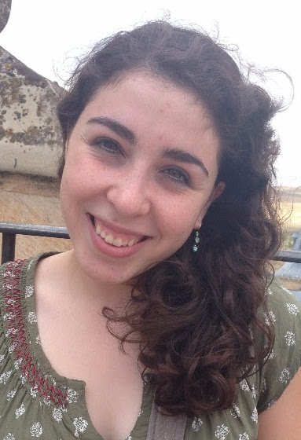

We are dedicated to promoting a sense of community among female B.S.E. students, professors, and alumnae of Princeton and introducing younger girls to the various opportunities offered by studying engineering.
We hold study breaks and other social events throughout the year for interested students. Our calendar also includes various industry outreach opportunities.
Traditionally, engineering has been thought of as being predominantly male. Although this trend is reversing, in general, engineering has much greater salary parity between men and women than most other fields. Engineers are at the forefront of the development of the technology that drives our society forward. It is our aim to continue to promote these fields to women who might not have considered studying them, and to offer support to the women who do.
Board
Elisabeth Juechser
Co-President CBE 2020
Raje Enjeti
Co-President CBE 2019

Emily McDonnell
Girl Scouts Community Outreach Chair MAE 2020
Megan Whitley
Girl Scouts Community Outreach Chair CBE 2020
Neha Chauhan
High School Engineering Day Community Outreach Chair Undeclared 2021
Mofope Olarinmoye
High School Engineering Day Community Outreach Chair CBE 2020
TBD
Treasurer TBD
Lauren Tang
Industry Outreach Chair COS 2021
Grace Guan
Webmaster ORFE 2020
Noa Zarur
Membership Chair Undeclared 2021
Dionne Chen
Publicity Chair ORFE 2020
Events
Every semester we hold a Girl Scouts Event and a High School Colloquium to introduce more girls to engineering! These events normally occur around November/December and March/April. Registration goes live about a month in advance so make sure you check back!
At two Girl Scouts Events each year, local girls earn science and technology badges with members of our club. At our High School Colloquiums we help introduce high school students to the various branches of engineering and offer an insight into these fields that they might otherwise not consider studying.
email us
swe[at]princeton.edu
mail us
Princeton Society of Women Engineers ACE-33 Engineering Quad Princeton, NJ, 08544
(c) Princeton Society of Women Engineers 2017-2018